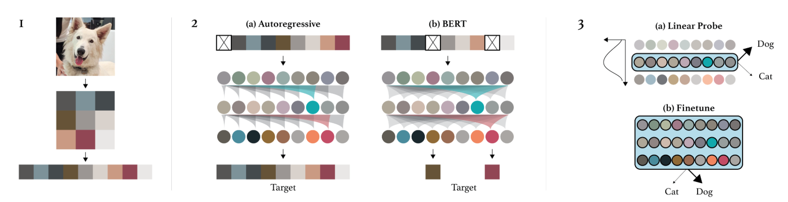
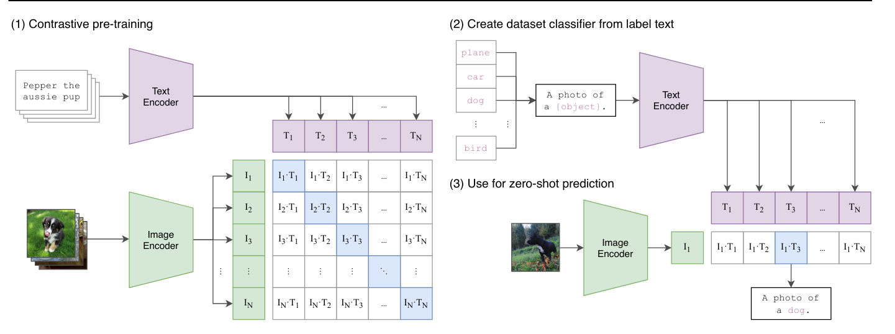

Utilisations possibles de l’architecture Transformers#
Dans les parties précédentes, nous avons démontré les capacités des transformers à travers une application de prédiction du prochain token (comme GPT). Nous avons également abordé la différence entre encodeur, décodeur et architecture complète pour les tâches de NLP.
Ce qui est génial avec l’architecture transformers, c’est qu’elle est très généraliste. Elle peut s’appliquer à énormément de problèmes différents, contrairement aux couches de convolutions qui sont biaisées (ce qui les rend très performantes rapidement sur les images).
Dans ce cours, nous allons rapidement présenter quelques architectures classiques de transformers dans différents domaines, principalement le NLP et la vision.
BERT#
L’article BERT: Pre-training of Deep Bidirectional Transformers for Language Understanding propose une méthode pour entraîner un modèle de langage de type encodeur de manière non supervisée.
Point sur l’entraînement non supervisé pour les NLP : Une des forces des modèles de langage (LLM) comme GPT et BERT, c’est qu’on peut les entraîner sur de grandes quantités de données sans avoir à les annoter. Pour GPT, on prend un document texte, on cache la fin et on demande au modèle de la générer. Le loss est calculé en comparant la génération du modèle au texte original (comme nous l’avons fait pour générer du Molière). Pour BERT, l’approche est un peu différente.
Entraînement du modèle#
BERT est un modèle encodeur, c’est-à-dire qu’il prend en compte le contexte des mots à la fois à droite et à gauche (avant et après le mot actuel). Pour l’entraîner, on ne peut pas faire comme GPT et se contenter de prédire les mots suivants.
Masked Language Model (MLM) : BERT est un Masked Language Model (MLM). Pendant l’entraînement, on masque certains mots d’une phrase (à des positions aléatoires) et on demande au modèle de les prédire en se servant du contexte autour du mot masqué.

Figure extraite de blogpost
Next Sentence Prediction (NSP) : BERT est également pré-entraîné pour déterminer si une phrase B suit une phrase A dans le texte, ce qui aide le modèle à comprendre les relations entre les phrases.
Note : Pour en savoir plus sur BERT et pour apprendre à le finetune, vous pouvez consulter le cours 10 sur BERT.
Utilité de BERT#
BERT et les autres modèles de langage encodeur (RoBERTa, ALBERT, etc.) sont utilisés comme base pour des tâches plus précises. On les finetune ensuite pour d’autres tâches, notamment celles évoquées dans le notebook précédent (analyse de sentiments, classification de texte, etc.).
Note : Nous avons vu comment entraîner les modèles encodeur et décodeur de manière non supervisée pour les tâches de NLP (BERT et GPT). Il est aussi possible d’entraîner un modèle complet (encodeur, décodeur et cross attention) de manière non supervisée. C’est le cas du modèle T5. Nous ne décrivons pas son fonctionnement dans ce notebook, mais pour en savoir plus, vous pouvez consulter le blogpost.
Transformers pour le traitement d’images#
Quelques années après le boom des transformers dans le domaine du NLP, leur utilisation dans le domaine de la vision par ordinateur a également bouleversé le domaine. L’article An Image is Worth 16x16 Words: Transformers for Image Recognition at Scale introduit une application d’un transformer de type encodeur adapté au traitement des images.
ViT : Vision Transformer#
Ce papier introduit le Vision Transformer (ViT) qui se base sur une découpe de l’image en patches qui sont ensuite donnés en entrée au transformer comme des tokens.

Comme on peut le voir à droite de la figure, l’architecture correspond à une architecture de type encodeur (la seule chose qui change par rapport à Attention Is All You Need est l’application des normes avant les couches plutôt qu’après).
Dans le modèle Vision Transformer (ViT), chaque image est découpée en patches de taille fixe, par exemple 16x16 pixels. Chaque patch est transformé en un vecteur en l’aplatissant, puis ce vecteur est projeté dans un espace d’embedding à l’aide d’une couche de projection linéaire, similaire à celle utilisée dans les modèles de traitement de texte comme BERT ou GPT (couche Embedding). Cette représentation vectorielle capture les informations spatiales et structurelles de l’image, tout comme les embeddings dans les modèles NLP capturent le sens et les relations entre les mots. Le titre de l’article “An Image is Worth 16x16 Words” reflète cette analogie : chaque patch d’image est traité comme un “mot” projeté dans un espace d’embedding pour permettre l’apprentissage avec l’architecture transformer.
Note :
Le Vision Transformer du papier original est entraîné de manière supervisée sur des tâches de classification d’objets. Les résultats de ce papier sont impressionnants et démontrent sa capacité à surpasser les modèles convolutifs.
Une amélioration notable de l’architecture ViT pour les tâches de vision (avec entraînement supervisé) est le Swin Transformer. Ce transformer a une architecture hiérarchique (pouvant rappeler les CNN) permettant de capturer les relations spatiales plus efficacement.
Apprentissage non supervisé pour la vision#
Dans le domaine du NLP, les modèles de fondations (entraînés de manière non supervisée) ont permis des avancées spectaculaires. Créer un modèle de fondation pour les images est aussi une tâche très attirante. Cela permettrait d’avoir un modèle que l’on peut finetune simplement sur des tâches précises et avec de bons résultats. Pour cette tâche, plusieurs approches ont été proposées à partir d’images uniquement. Nous allons en présenter deux dans la suite de cette partie.
BEIT : BEIT: BERT Pre-Training of Image Transformers propose d’utiliser le même mode d’entraînement que BERT mais dans le contexte des images. Cela consiste à masquer certains patches de l’image que l’on va essayer de prédire pendant l’entraînement. Cependant, à l’inverse des mots, les possibilités d’images sont presque infinies (si on veut prédire une image RGB de taille \(3 \times 8 \times 8\), il y a \((256 \times 256 \times 256)^{8 \times 8} = (16777216)^{64}\) de possibilités, ce qui est plus que le nombre d’atomes dans l’univers). On ne peut donc pas directement prédire les pixels. Pour remédier à ce problème, on utilise un VQ-VAE qui permet de discrétiser une représentation de l’image. Cette version discrète correspond à des valeurs issues d’un dictionnaire de taille fixe, et il est donc possible de prédire cette représentation discrète.

Image GPT : L’article Generative Pretraining from Pixels introduit un équivalent de GPT mais pour les pixels. Il s’agit d’un modèle autoregressif qui génère les pixels d’une image un par un, comme le fait un modèle autoregressif de NLP avec les tokens. Cela permet d’avoir un entraînement non supervisé, mais il y a quand même de nombreux défauts :
La génération prend énormément de temps car on génère un pixel à la fois. On doit donc appliquer une réduction de dimension au préalable.
Générer de gauche à droite n’a pas de sens pour une image. Pourquoi de gauche à droite et pas de droite à gauche ? Ou en commençant du milieu ?

Il existe d’autres façons d’entraîner des transformers de vision (ou d’autres modèles de vision) de manière non supervisée, comme les Masked Autoencoders ou les modèles associant texte et image.
Transformers associant texte et image#
Les modèles transformer associant texte et image se sont révélés d’une grande aide pour la création de modèles de fondations. Ces modèles sont souvent des captionneurs, c’est-à-dire qu’on les entraîne à générer la description d’une image.
CLIP : Connecter images et texte#
Dans cette partie, nous allons présenter le fonctionnement du modèle CLIP introduit dans l’article Learning Transferable Visual Models From Natural Language Supervision. Nous présenterons également l’intérêt de ce type de modèle et ses capacités dans le cadre de nombreuses tâches.
Architecture de CLIP : L’entraînement de CLIP repose sur une méthode contrastive. Cette méthode d’entraînement consiste à présenter au modèle deux exemples : un exemple positif qui correspond au label donné et un exemple négatif qui ne correspond pas au label. Le but est de pousser le modèle à associer correctement l’exemple positif au label tout en dissociant l’exemple négatif du label. Ainsi, cette approche permet de définir une frontière claire entre ce qui est pertinent (positif) et ce qui ne l’est pas (négatif), en maximisant la séparation entre les deux.
En pratique, CLIP utilise à la fois un encodeur textuel et un encodeur d’image, tous deux basés sur des architectures de transformers. Le modèle encode des descriptions textuelles et des images pour ensuite les associer correctement pendant l’entraînement. L’objectif principal est de maximiser la corrélation entre les descriptions et les images correspondantes, tout en minimisant cette corrélation pour les paires qui ne correspondent pas. Cela permet au modèle d’apprendre à représenter efficacement les relations entre texte et image dans un espace d’embedding commun, facilitant ainsi la compréhension et la génération de texte à partir d’images, et vice versa.
Lors de la phase de test, on peut demander au modèle de générer une description adaptée pour notre image.

Utilisation du modèle : Au-delà d’être un simple captionneur, CLIP permet aussi de faire de la classification zero-shot, c’est-à-dire qu’on peut classifier une image sans avoir entraîné le modèle spécifiquement sur cette tâche. Dans le cas de CLIP, cela permet de donner un score à chaque description qu’on lui fournit. On lui donne deux descriptions “A photo of a cat” et “A photo of a dog”, et il renvoie des scores de probabilités d’association de notre image actuelle avec chacune des deux descriptions.
Autres utilisations : Cette méthode d’entraînement a également permis de créer des modèles de détection zero-shot comme OWL-ViT, des modèles de transfert de style ou encore des modèles de génération d’images.
Dataset d’images avec description : On peut également se demander si une description d’image n’est pas équivalente à un label et qu’on aurait donc besoin d’une annotation laborieuse pour entraîner ce type de modèle (qui demandent des milliards d’images pour être performants). En réalité, il est possible de récolter des images avec description assez simplement sur internet grâce au “alt” de l’image en code HTML. Il s’agit d’une description de l’image que les gens ajoutent à leur image dans le code HTML. Bien sûr, ces données ne sont pas forcément fiables, mais la quantité est plus intéressante que la qualité dans ce type de modèle.
De plus, il existe maintenant des bases de données open-source contenant plusieurs milliards de paires image/description. Le plus connu étant LAION-5B.